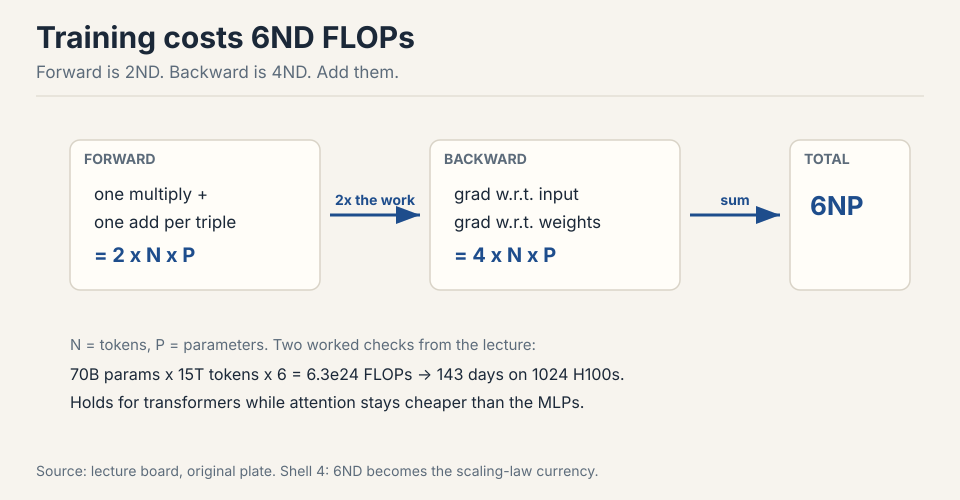

Lecture 2: Resource Accounting
Video blocked (ad-blocker or local file mode).
Watch on YouTubeVideo not loading? Watch on YouTube
Original lecture. Percy Liang derives the compute and memory accounting of training: precision, FLOPs, MFU, arithmetic intensity, and the 6ND rule.
How to read this lesson
This lesson has two levels. Level 1 (Core) gives you the accounting system: how to count compute, how to count memory, and how to tell which one limits you. Level 2 (Deep) adds the derivations and the memory tricks used in real training runs.
No prerequisites are assumed. Every term is defined at first use. This lesson links back to Lecture 1 for the pipeline.
Level 1: The goal
Train the best model possible given a finite set of resources. Resources mean compute and memory. Data is not the limit in this course.
given : compute budget (FLOPs), memory budget (bytes) maximize : model quality measure : everything below (precision, FLOPs, intensity)
Before you can optimize efficiency, you must measure it. This lecture builds the measurement system. By the end you answer questions like the two below.
The professor opened with news: the Marin project ran at 1e23 FLOPs and landed within 0.05 of the loss predicted by scaling-law fits 00:09 ⏱00:09. Prediction before the run matched the run. That is the power of good accounting.
Level 1: Two questions you will be able to answer
Question 1. How long to train a 70B parameter model on 15T tokens on 1024 H100s? Answer: 143 days 02:05 ⏱02:05.
Q1 : 6 x params x tokens / (spec speed x MFU) = training days Q2 : total GPU memory / 12 bytes per param = max params
The recipe: total FLOPs = 6 x parameters x tokens. Look up H100 speed on the spec sheet. Multiply by MFU, about 0.5. Divide.
Question 2. What is the largest model you can train on 8 H100s with AdamW? Answer: about 53B parameters 02:51 ⏱02:51.
The recipe: each H100 holds 80 GB. AdamW needs 12 bytes per parameter. 640 GB divided by 12 bytes gives about 53B.
These are back-of-the-envelope numbers. The point is the shape of the calculation, not the last digit.
Compute total FLOPs first: 6 x 70e9 x 15e12 = 6.3e24 FLOPs. An H100 delivers 989 TFLOP/s dense in bf16. At 0.5 MFU that is ~495 TFLOP/s effective per GPU. With 1024 GPUs, that is ~5.1e17 FLOP/s, or ~4.4e22 FLOP/day. Divide: 6.3e24 / 4.4e22 = ~143 days. Every step is one line of arithmetic once you know the 6ND rule and MFU. Time doubles linearly, but the memory picture does not change: memory depends on model size and batch size, not token count. This is why compute accounting (6ND) and memory accounting (12 bytes per parameter) are separate systems.
Level 1: Tensors are the building blocks
Everything is a tensor: parameters, gradients, optimizer states, data, activations 04:46 ⏱04:46. A tensor generalizes vectors and matrices to any number of dimensions.
Memory for one tensor = number of elements x bytes per element. A 4x8 matrix in float32 holds 32 elements x 4 bytes = 128 bytes 07:15 ⏱07:15. One matrix in GPT-3’s feedforward layer is about 2.3 GB 07:47 ⏱07:47. Tensors get big.
By default PyTorch creates tensors on CPU in float32. Move them to GPU for speed. Declare the dtype you want.
Level 1: FLOPs is work, FLOP/s is speed
A FLOP is one floating-point operation, such as an addition or a multiplication 27:36 ⏱27:36.

The pet peeve: FLOPs with a lowercase s is work done. FLOP/s is hardware speed. GPT-3 took ~3.14e23 FLOPs of work. The H100 promises 989 TFLOP/s of speed in dense bf16. Time = work divided by speed 28:03 ⏱28:03.
Spec sheet trap: the H100 lists 1979 TFLOP/s, but the footnote says that number assumes sparsity. Dense math runs at half: 989 TFLOP/s 29:29 ⏱29:29. Always read the footnote.
Intuition check: 8 H100s for one week give about 5e21 FLOPs 30:09 ⏱30:09. That is 8 x 989e12 x 604800 seconds. Napkin math like this is the whole game.
Level 1: Precision, from fp32 down to fp4
Float32 has 32 bits: 1 sign bit, 8 exponent bits, 23 mantissa bits 06:08 ⏱06:08. The exponent sets dynamic range. The mantissa sets resolution.

Cut bits in half and you get float16: 1 sign, 5 exponent, 10 mantissa. The 5-bit exponent kills dynamic range. The value 1e-8 rounds to zero. Training in fp16 gives underflow, overflow, and NaNs 08:52 ⏱08:52.
bf16 was built in 2018 to fix this. Same 16 bits, but the exponent keeps fp32’s 8 bits and the mantissa shrinks to 7. Same dynamic range as fp32, worse resolution. Deep learning tolerates sloppy resolution but not overflow. bf16 is the sweet spot 09:53 ⏱09:53.
Mixed precision is standard practice. Use bf16 for parameters, activations, and gradients. Use fp32 for optimizer states. PyTorch AMP wraps your code and casts automatically: matmuls go to bf16, exponentiation stays fp32 11:52 ⏱11:52.
Below bf16: fp8 has two variants, one favoring range and one favoring resolution, supported by NVIDIA’s Transformer Engine 13:15 ⏱13:15. nvfp4 uses 4 bits per value with a per-block scale factor, so neighbors share dynamic range. Nemotron 3 Super trained in fp4 13:47 ⏱13:47. One-bit training has no credible result yet: the working recipe is train in bf16, then quantize to 1-2 bits after 16:21 ⏱16:21.
bf16 keeps the 8-bit exponent of fp32, so it has the same dynamic range: no underflow of small gradients, no overflow of large activations. fp16 has only 5 exponent bits, so values like 1e-8 round to zero and training produces NaNs. Deep learning needs range more than resolution, because gradients are noisy anyway. That single bit-budget trade is why bf16 won. The optimizer squares gradients and keeps running averages across steps. Those are tiny numbers accumulated over thousands of updates. In bf16 the squares underflow and the averages lose the signal. The states are not the compute bottleneck, so paying 4 or 8 bytes per parameter there buys stability cheaply.
Level 1: einops, names instead of indices
Reading x.transpose(-2, -1) forces you to track what -2 and -1 mean.
einops names the dimensions instead 18:12 ⏱18:12.
einsum is generalized matrix multiplication with bookkeeping. Name each dimension. Dimensions that appear on both inputs but not the output get summed out.
shapes: x is 3 x 4, y is 4 x 3 index soup: z[i,j] = sum_k x[i,k] * y[k,j] # what is k? named: x[seq1, hidden] * y[hidden, seq2] -> z[seq1, seq2]
The named version needs no transpose: the names do the work. With
batches, heads, and sequences stacked, ... absorbs the batch
dimensions you do not want to name 22:05 ⏱22:05.
Two more tools. reduce generalizes sum, mean, max, min over named
dimensions 22:55 ⏱22:55. rearrange splits or merges dimensions,
for example splitting a width-8 dimension into 2 heads x 4 hidden before
a per-head operation 24:06 ⏱24:06.
Correctness and readability, not speed: it compiles to the same primitives. Named dimensions make the contraction pattern explicit, so transpose bugs and wrong-axis reductions become visible. In attention code with batch, head, and sequence dimensions, that clarity prevents the most common shape bugs. In the innermost hot loop where you need a fused kernel anyway, you write the kernel directly. einops is for model code, where clarity dominates and the ops lower to the same cuBLAS calls.
Level 1: Counting FLOPs of a matmul
A matmul of B x D by D x K costs 2 x B x D x K FLOPs 31:52 ⏱31:52. Each output entry needs D multiplications and D-1 additions. Round D-1 to D: 2 FLOPs per triple.
Elementwise ops cost the matrix size: addition on m x n costs mn FLOPs. No other op rivals matmul at large sizes, so accounting focuses on matmuls 32:34 ⏱32:34.
Reframe: B is the number of data points, D x K is the parameter count. Forward pass of one linear layer = 2 x tokens x parameters. This shape grows into the 6ND rule below.
Benchmarking note: GPUs run asynchronously. Wrap timing with
torch.cuda.synchronize() before and after, average several runs, or
your numbers are fiction 35:27 ⏱35:27.
Level 1: MFU, actual over promised
Model FLOPs Utilization = actual FLOP/s divided by spec-sheet FLOP/s 37:15 ⏱37:15.
An MFU of 0.5 on a real model is good. A pure matmul can reach 0.8. An MFU of 0.1 means something is wrong and you should fix it. You never exceed 1.0.
Memory bottlenecks. Low MFU with high FLOP counts means the GPUs wait on data movement instead of computing. Check arithmetic intensity of your ops, batch sizes, and whether small elementwise ops dominate the profile. The next section gives you the diagnostic language: compute the intensity, compare to 295, and find the memory-bound ops.
Level 2: Arithmetic intensity
Hardware is two boxes: HBM memory and the compute chip. Every op reads tensors from HBM, computes, and writes back 40:50 ⏱40:50. Total time is the slower of move time and compute time, assuming perfect overlap 44:46 ⏱44:46.

Worked example: ReLU on a 1M-element bf16 vector. Bytes moved: read 2n, write 2n = 4n = 4 MB. FLOPs: n = 1M comparisons. Move time = 4e6 bytes / 3.3e12 bytes/s = ~1 microsecond. Compute time = 1e6 / 989e12 = ~1 nanosecond. The op is memory bound: it spends its life waiting for bits 42:38 ⏱42:38.
Arithmetic intensity = FLOPs divided by bytes moved. The H100’s accelerator intensity = 989e12 / 3.3e12 = ~295 FLOP/s per byte/s 46:00 ⏱46:00. An op with intensity below 295 is memory bound. Above 295, compute bound.
| Op | Bytes | FLOPs | Intensity | Bound by |
|---|---|---|---|---|
| ReLU | 4n | n | 0.25 | memory |
| GELU | 4n | 20n | 5 | memory |
| Dot product | 4n | 2n | 0.5 | memory |
| Matvec | 2n^2 | 2n^2 | ~0.5 | memory |
| Matmul | 6n^2 | 2n^3 | n/3 ~ 340 | compute |
GELU does 20x the work of ReLU per element, yet runs no slower: both are memory bound, so the extra FLOPs are free 48:23 ⏱48:23. Matmul is the only compute-bound op here, because it does n^3 work on n^2 bytes. Intensity grows with matrix size, which is why large batches and large matrices saturate GPUs 52:19 ⏱52:19.
The inference foreshadow: generating one token at a time is a matrix-vector product, hence memory bound. Training processes whole sequences at once, hence compute bound 53:29 ⏱53:29.
Level 2: The roofline
Plot intensity on the x-axis and realized FLOP/s on the y-axis. Each accelerator is a roofline: a rising ramp capped by its peak FLOP/s 54:48 ⏱54:48.

Ops left of the knee never reach the peak, no matter how well written. ReLU sits at 0.25, GELU at 5, both deep in memory-bound territory. Matmul at ~340 sits right of the knee and can saturate the chip. This plot is the diagnostic: compute your op’s intensity, find it on the x-axis, read your ceiling.
Level 2: The backward pass costs twice the forward
Zoom into one linear layer. Forward: h2 = h1 @ w2. The backward pass computes two gradients 61:14 ⏱61:14.
forward: h2[batch, out] = sum_in h1[batch, in] * w2[in, out]
backward: dh1[batch, in] = sum_out dh2[batch, out] * w2[in, out]
dw2[in, out] = sum_batch dh2[batch, out] * h1[batch, in]
Each backward line is a matmul over the same three dimensions, so each costs the same as the forward. Two of them: the backward pass is exactly 2x the forward pass.

Total: 2ND forward + 4ND backward = 6ND FLOPs per training step, where N is tokens and D is parameters 65:52 ⏱65:52. This holds for transformers too, as long as context length stays modest: with very long contexts the n^2 attention term needs separate accounting 66:28 ⏱66:28.
One linear layer forward costs 2 FLOPs per parameter per token: one multiply and one add. The backward pass computes two gradients, each a matmul over the same dimensions, so it costs 2 x 2 = 4 FLOPs per parameter per token. Add forward and backward: 2 + 4 = 6. The rule counts multiply-adds across all parameters and all tokens in the batch. When attention dominates: its cost grows with sequence length squared, which 6ND ignores. For long-context training you add the attention term separately. It also ignores the optimizer step and elementwise ops, but those are small next to the matmuls.
Level 2: Memory inventory for training
Four residents live in GPU memory during training 69:27 ⏱69:27.

| Resident | Bytes | Notes |
|---|---|---|
| Parameters | 2 x P | bf16 |
| Gradients | 2 x P | bf16, one copy of params |
| Activations | 2 x B x D x L | bf16, scales with batch |
| Optimizer (Adam) | 8 x P | fp32: 4 for m, 4 for v |
AdaGrad keeps one fp32 state per parameter: 4 bytes. Adam keeps two: 8 bytes. Optimizer states are the capacity hog: they decide whether the model fits, even though they barely affect step speed 71:04 ⏱71:04.
The lecture’s quiz answer falls out directly: 8 H100s = 640 GB. 640e9 / 12 bytes per parameter = ~53B parameters with AdamW.
Level 2: Gradient accumulation
Activation memory scales with batch size. Large batches stabilize training up to a critical batch size, but they may not fit in memory. Gradient accumulation splits the difference 72:30 ⏱72:30.
flowchart LR
A["microbatch 1"] --> G["compute grads"]
B["microbatch 2"] --> G
C["microbatch 3"] --> G
G --> S["accumulate, no zeroing"]
S --> U["step every B/micro steps"]
U --> Z["zero grads"]
Run microbatches, add their gradients without zeroing, and step the optimizer every B/microbatch steps. Effective batch size B with the activation memory of one microbatch. A small code change for a large memory win.
Level 2: Activation checkpointing
Training stores every layer’s activations for the backward pass: 2 x B x D x L bytes. Checkpointing stores only a subset and recomputes the rest during backward 73:21 ⏱73:21.

The trade: memory down, compute up. Store nothing and recompute costs
O(L^2). The sweet spot stores every sqrt(L)-th layer: O(sqrt(L)) memory
and O(sqrt(L)) extra compute. In PyTorch, wrap a block with
torch.utils.checkpoint: the block runs forward without saving
intermediates, then recomputes them on the backward pass.
Gradient accumulation when the batch does not fit: it cuts activation memory by the accumulation factor with zero extra compute, but it does not change per-layer memory. Activation checkpointing when depth does not fit: it cuts activation memory to O(sqrt(L)) at the cost of ~30% extra compute from recomputation. Use both when both batch and depth are large. Neither reduces parameter or optimizer memory: that needs sharding or offloading, covered in the parallelism lectures.
Recap: the whole lesson on one screen
Eight ideas carry this lecture. Read each card. Say the core sentence out loud. If you can, you own the lesson.

Forward is 2 FLOPs per parameter per token. Backward is twice that. Add them: 6 x tokens x parameters. This one formula prices every training run.
Key: 6 x 70B x 15T = 6.3e24 FLOPs
Lowercase s counts operations done. Per-second is hardware speed. Time equals work divided by speed. The H100 spec halves for dense math: 989 TFLOP/s, not 1979.
Key: read the sparsity footnote
fp16 underflows because its exponent is only 5 bits. bf16 keeps fp32's 8-bit exponent with 16-bit storage. Same range, less resolution, no NaNs.
Key: 1 sign + 8 exponent + 7 mantissa
2 for params, 2 for grads, 4 + 4 for Adam's two fp32 moments. Optimizer states decide whether the model fits in memory. 8 H100s fit about 53B parameters.
Key: 2 + 2 + 4 + 4 = 12
Arithmetic intensity is FLOPs per byte moved. Below 295 on the H100 you are memory bound and never reach peak speed. ReLU sits at 0.25. Matmul sits near 340.
Key: intensity = FLOPs / bytes
ReLU on 1M values: 1 microsecond moving, 1 nanosecond computing. GELU does 20x the FLOPs of ReLU and runs no slower, because both wait on memory.
Key: time = max(move, compute)
Two gradients per layer: one for the input, one for the weights. Both are matmuls over the same dimensions. Same cost each. That is where the 4 in 6ND comes from.
Key: 2 forward + 4 backward = 6
Store every sqrt(L)-th layer activation, recompute the rest during backward. Gradient accumulation instead cuts batch memory with zero extra compute.
Key: O(sqrt(L)) memory, O(sqrt(L)) recompute
Official sources and further reading
Official: - Lecture 2 video and executable code (lecture_02.py): all numbers above are computed live in the notebook. - einops tutorial: the named-dimension system used in the lecture.
Further reading: - Williams et al., Roofline (2009): the visual performance model behind the intensity analysis. - NVIDIA H100 spec sheet: the 1979 TFLOP/s figure and its sparsity footnote.
Caveats from these sources. The 143-day estimate ignores communication overhead and assumes a flat 0.5 MFU. Real runs vary. The 53B figure excludes activations, which depend on batch size and sequence length. 6ND ignores attention’s n^2 term: it underestimates long-context training. Mixed precision details (which ops stay fp32) are handled by AMP heuristics, not derived here.
Connections to the other courses
- CS229: the loss chip is defined there. Here it becomes the work unit that 6ND prices.
- CS336 later lectures: 6ND prices every scaling-law fit. The memory-bound inference lecture reuses the intensity table. Parallelism lectures shard the 12-bytes-per-parameter budget.
- CS229S: the device block and memory hierarchy here become the multi-GPU topology there.
- CS329A: test-time compute is priced in FLOPs with the same accounting.
Resource accounting cheatsheet. Goal: best model for fixed compute and memory. Tensors: memory = elements x bytes. Precision: fp32 (1+8+23), fp16 underflows (5-bit exponent), bf16 sweet spot (1+8+7), fp8 two variants, nvfp4 block-scaled, 1-bit only post-training. Mixed precision: bf16 for params/acts/grads, fp32 for optimizer states (AMP). FLOPs = work. FLOP/s = speed. H100 dense bf16 = 989 TFLOP/s (halve the 1979 spec). Matmul = 2BDK FLOPs. MFU = actual/promised. 0.5 good, 0.1 broken. Intensity = FLOPs/byte. H100 knee = 295. ReLU 0.25, GELU 5, matmul n/3. time = max(move, compute). Backward = 2x forward. Total 6ND. AdamW = 12 B/param (2+2+4+4). Activations = 2BDL. Grad accum: microbatches, no zeroing, zero extra compute. Checkpointing: store sqrt(L), recompute rest.
The three numbers. 6ND prices the run. 12 bytes per parameter sizes the cluster. 295 decides the bottleneck. If you remember nothing else, remember these.
Sources
- VIDEOLecture 2 video, Stanford Online YouTube
- NOTESOfficial subtitle transcript (en-US)
- CODElecture_02.py, executable lecture code
- SUPPLEMENTeinops tutorial: named tensor operations
- PAPERWilliams et al., Roofline: An Insightful Visual Performance Model (2009)